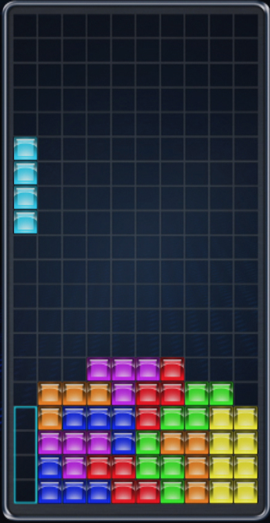

Projeto Final
Nesta Página sera Encontrado o que se deve fazer no Projeto Final da Disciplina de Programação para Web
Enunciado Geral
Criado em 1984 por Alexey Pajitnov, Tetris é um jogo muito popular em que o jogador deve rotacionar e encaixar peças (chamadas Tetriminos) que caem da parte superior de um tabuleiro com uma certa velocidade. O objetivo final do jogo é preencher totalmente o maior número possível de linhas horizontais pois, uma vez preenchidas, estas linhas desaparecem e o jogador ganha mais espaço no tabuleiro para continuar a tarefa, somando pontos no processo. Com o passar o tempo, geralmente a velocidade de queda das peças aumenta, tornando o jogo gradualmente mais difícil. A partida termina quando não há mais espaço no tabuleiro para acomodar novas peças.
Para ilustrar o funcionamento do jogo, a Figura 1 exibe um tabuleiro de uma versão de Tetris onde a peça corrente a ser encaixada (e que está caindo na tela) é a peça azul claro. Note que, se o jogador encaixá-la no espaço destacado, eliminará quatro linhas do tabuleiro, liberando todo este espaço.
Figura 1 - Exemplo de um jogo de Tetris.
Existem inúmeras variações do jogo Tetris, com modificações nos tipos de peças, no tamanho dos tabuleiros, nas regras de pontuação, na dinâmica de queda das peças etc. Mais informações podem ser obtidas aqui.
Neste trabalho você deverá desenvolver e implementar uma plataforma online, usando as ferramentas estudadas na disciplina (HTML, CSS, JavaScript e PHP), que permita que um jogador cadastrado jogue partidas de uma nova versão do jogo Tetris, chamada Rolling Tetris (RT).
RT segue regras parecidas com as da versão clássica de Tetris, mas com as seguintes particularidades:
- Ao longo da partida e de maneira aleatória podem surgir peças especiais que, quando compõem uma linha eliminada, provocam a rotação do tabuleiro. Ou seja, se as peças estavam "caindo" antes da linha com a peça especial ser eliminada, elas passarão a "subir" e vice-versa (daí o nome Rolling Tetris). A cada rotação, as peças não eliminadas que estão acumuladas em um extremo do tabuleiro (seja na parte inferior, quando as peças "caem", ou superior, quando as peças "sobem") devem ser transferidas para o outro extremo, mantendo-se as posições.
- O jogador deverá ter a opção de escolha do tamanho do tabuleiro em que a partida se desenrolará. Pelo menos duas opções deverão ser dadas: (i) um tabuleiro clássico, com 10 células de largura e 20 células de altura (igual ao da Figura 1); e (ii) um tabuleiro maior, de dimensões 22 x 44 células (largura x altura).
- Além da peça especial que leva à rotação do tabuleiro, formada por uma única célula do tabuleiro (quadradinho) e exibida em cor chamativa, seis peças diferentes, cujas estruturas são dadas na Figura 2, poderão surgir na tela (sempre uma por vez). A escolha da peça que surgirá deverá ser feita aleatoriamente pelo jogo, sendo que todas as sete peças (seis da Figura 2 mais a peça especial) deverão ter a mesma probabilidade de surgimento.
 Figura 2 - Peças regulares que deverão estar presentes na sua implementação de RT. Além dessas, o jogo deverá contar também com a peça especial, formada por uma única célula do tabuleiro.
Figura 2 - Peças regulares que deverão estar presentes na sua implementação de RT. Além dessas, o jogo deverá contar também com a peça especial, formada por uma única célula do tabuleiro.
- O jogador controlará a movimentação das peças utilizando as quatro setas do teclado.
- A pontuação deve levar em conta um bônus, a ser aplicado sempre que o usuário eliminar mais de uma linha de uma única vez. Cada linha eliminada gerará uma soma de 10 pontos no placar total do usuário e o bônus corresponderá à multiplicação dos pontos gerados em uma eliminação pelo número de linhas eliminadas simultaneamente. Por exemplo, se o jogador eliminar 3 linhas simultaneamente, será adicionado ao seu placar (10 + 10 + 10) x 3 = 90 pontos. Lembre-se que o usuário poderá eliminar, no máximo, quatro linhas simultaneamente.
- A velocidade com que cada peça sobe/desce pelo tabuleiro deve variar conforme o placar do jogador, para que a dificuldade aumente com o passar do tempo. Você deverá programar o jogo para que a velocidade de subida aumente sempre que o jogador atingir uma pontuação múltipla de 300 pontos. Caberá a você calibrar como esta velocidade mudará. Cuide para que o jogo não se torne muito difícil muito rapidamente nem seja muito lento para se tornar desafiador.
A implementação de RT deverá ser toda feita em JavaScript, para execução no front-end. No entanto, a plataforma online do jogo também deverá contar com um módulo em back-end, responsável por gerenciar a autenticação dos jogadores, o armazenamento e recuperação dos resultados de cada partida jogada e a elaboração de um ranking dos 10 melhores jogadores de RT cadastrados na plataforma. Mais informações sobre o front-end e back-end são dadas a seguir.
Front-End
A primeira tela a ser exibida para qualquer usuário que acesse o sistema deve conter dois campos de um formulário para autenticação: um para o usuário e o outro para a senha (além de um botão para enviar os dados fornecidos). Além disso, deverá haver um link para uma página de cadastro no sistema, caso o usuário não possua usuário e senha.
Na página de cadastro o sistema deverá solicitar os seguintes dados de um novo jogador: nome completo, data de nascimento, CPF, telefone e e-mail, além do username (único) e da senha para acesso ao sistema. Estes dados deverão ser mantidos na plataforma enquanto a conta do jogador estiver ativa.
Uma vez autenticado no sistema, o jogador deverá ser redirecionado para uma página que contenha o RT implementado em JavaScript. Além do jogo em si, nessa página o usuário deverá visualizar pelo menos as seguintes informações:
- Tempo da partida até o momento (caso iniciada), pontuação, número de linhas eliminadas e nível de dificuldade em que se encontra (associado à velocidade de queda das peças).
- Ranking com os resultados de todas as partidas jogadas anteriormente por aquele jogador. Tal ranking deve exibir as seguintes informações: nome do jogador, pontuação obtida, nível atingido e tempo de duração da partida.
Na página que contém o RT o usuário também deverá ter acesso a hyperlinks que o levam a duas outras páginas do sistema, além de uma opção para desconectar e retornar à página de login: uma página com o ranking global de jogadores e outra onde ele poderá editar suas informações pessoais. Nesta página de edição de informações pessoais, os campos data de nascimento, CPF e username NÃO poderão ser alterados.
Por fim, na página de ranking global de jogadores o sistema deverá mostrar os usernames, pontuações e nível máximo atingido para as 10 melhores pontuações obtidas dentre todos os jogadores registrados no sistema, além de um indicativo da posição atual em que o jogador autenticado no sistema estaria dentro deste ranking global.
Ao final de cada partida, o sistema deverá permitir ao usuário escolher se ele deseja ou não iniciar uma nova partida.
ATENÇÃO 1: todas as páginas exibidas no front-end deverão seguir o padrão HTML 5 e contar com folhas de estilo prioritariamente externas, escritas em CSS (versão 2 ou superior). Tanto os documentos HTML enviados pela plataforma ao navegador dos usuários quanto as folhas de estilo devem ser validadas nos validadores de HTML e CSS do W3C:
- Validador de HTML: https://validator.w3.org/
- Validador de CSS: https://jigsaw.w3.org/css-validator/
ATENÇÃO 2: NÃO é recomendado o uso de templates CSS neste trabalho mas, caso o grupo queira usá-los, é mandatório indicar isto explicitamente no site e fornecer um link para a(s) fonte(s).
ATENÇÃO 3: para o desenvolvimento do jogo, será necessário estudar o funcionamento de eventos temporizados em JavaScript.
Back-End
Como já mencionado, o back-end da plataforma do RT será responsável por gerenciar a autenticação dos jogadores, o armazenamento e recuperação dos resultados de cada partida jogada e a elaboração do ranking de melhores jogadores cadastrados. Toda a implementação do back-end deverá ser feita em PHP e os dados armazenados em um Sistema Gerenciador de Bancos de Dados (SGBD) SGBD MySQL ou MariaDB.
Além do armazenamento persistente dos dados e sua recuperação sempre que necessário, caberá à implementação do back-end garantir que apenas usuários autenticados tenham acesso às páginas da plataforma. Caso um usuário não esteja autenticado, ele NÃO poderá acessar nenhuma página do sistema exceto a página de login (página inicial). Para isso, deverá ser utilizado o mecanismo de sessões de PHP.
As tabelas MySQL/MariaDB em que ficarão armazenados os dados tantos das partidas quanto de usuários do sistema devem ser definidas pelo grupo. A partir dessas definições, deverá ser entregue um script PHP (separado do projeto principal) para criação das tabelas necessárias para o correto funcionamento do sistema, além de um arquivo-texto com instruções para sua utilização.
ATENÇÃO 1: NÃO é permitido o uso de frameworks PHP.
ATENÇÃO 2: caso seja necessário o envio de dados para o servidor, via POST e utilizando JavaScript, considere o uso da interface FormData e da API XMLHttpRequest.
Regras para o Trabalho
- Esse Projeto deverá ser desenvolvido em grupos de 4 a 5 alunos.
- Como consta no Plano de Ensino da Disciplina, a nota desse Projeto corresponderá a 80% da média de cada aluno.
- Ao longo do semestre, cada grupo deverá entregar três parciais do Projeto, correspondentes a versões incrementais do sistema (o peso de cada uma na nota do Projeto estão no Plano de Ensino da Disciplina). Tais parciais serão:
- Parcial 1: documentos HTML correspondentes a versões não-funcionais das páginas previstas para o jogo, já com todas as definições de estilo via CSS. Nessa versão preliminar do sistema, todas as páginas deverão estar presentes, já com a formatação final e com hyperlinks que levem o usuário às demais páginas do sistema. No entanto, as funcionalidades de controle de acesso, do jogo em si, e o armazenamento e recuperação de informações não devem estar presentes. Substitua os campos das páginas que dependem dos aspectos dinâmicos do sistema por imagens ou valores estáticos (ex.: uma figura que corresponda ao tabuleiro do Rolling Tetris e valores fixos nas tabelas de ranking). A ordem de navegação entre as páginas já deve ser a final.
- Parcial 2: nesta segunda versão do sistema, toda a dinâmica do Rolling Tetris deverá estar implementada e funcional, mas a plataforma ainda não terá nenhuma funcionalidade relacionada ao back-end. Ou seja, o usuário poderá jogar quantas partidas de RT quiser, mas o sistema não contará com o controle de acesso ou persistência de dados.
- Parcial 3: corresponde ao incremento final do sistema, com a implementação de todas as funcionalidade relacionadas ao back-end. Espera-se que essa entrega corresponda à versão final do sistema, com as funcionalidades de front-end e back-end mencionadas anteriormente devidamente integradas e testadas.
- A entrega de cada parcial do Projeto será composta por dois arquivos:
- Um arquivo .ZIP contendo todos os arquivos necessários para configuração e execução do sistema (.html, .js, .php, .css, imagens etc.). É importante manter, no arquivo .ZIP, a estrutura de diretórios necessária para execução do jogo e incluir um arquivo TXT ou PDF que contenha:
- As instruções necessárias para configuração e uso do sistema;
- O link para o vídeo de apresentação da parcial entregue pelo grupo.
- Um arquivo .XLSX contendo o detalhamento da contribuição de cada membro do grupo. Este arquivo corresponde ao modelo disponível aqui, preenchido pelo grupo.
- Um arquivo .ZIP contendo todos os arquivos necessários para configuração e execução do sistema (.html, .js, .php, .css, imagens etc.). É importante manter, no arquivo .ZIP, a estrutura de diretórios necessária para execução do jogo e incluir um arquivo TXT ou PDF que contenha:
- Cada parcial entregue deverá ser acompanhada de um vídeo, de no máximo 10 minutos, em que todos os membros do grupo apresentam o que foi desenvolvido naquela parcial. Espera-se uma apresentação não apenas do funcionamento do sistema, mas da estrutura interna do que foi desenvolvido naquela parcial.
- O foco de cada vídeo deve ser no conteúdo da parcial que está sendo entregue (não é necessário reexplicar o que já foi apresentado em vídeos anteriores).
- O vídeo deve ser hospedado em algum serviço gratuito (ex.: YouTube) e o link fornecido junto com a entrega.
- Todo o código-fonte em JavaScript deve estar contido em um único arquivo .JS externo (exceto as chamadas às funções implementadas, que podem estar no HTML conforme a necessidade).
- Todas as definições de formatação geral das páginas deverão estar contidas em folhas de estilo CSS externas. É obrigatório o uso de folhas de estilo em cada página.
- Todos os documentos HTML gerados deverão seguir a versão 5 (HTML5).
- Tanto os arquivos HTML quando as folhas de estilo CSS deverão ser validados no site do W3C.
- Funcionalidades adicionais ao que foi pedido na dinâmica do Rolling Tetris são bem-vindas e podem gerar um bônus de até 2,0 pontos na nota da Parcial 2 (conforme sua complexidade/importância para o contexto desta atividade). No entanto, é necessário que o grupo enfatize tais contribuições adicionais no vídeo de apresentação da parcial.
- Cópias de outros grupos ou da internet serão penalizadas como descrito no Plano de Ensino da Disciplina.
- Não serão aceitos trabalhos entregues fora do prazo.
Observação